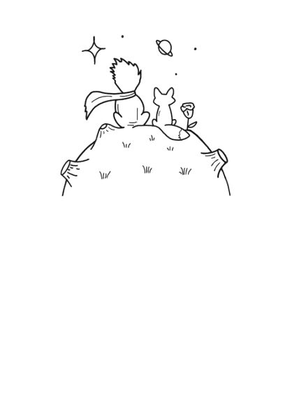
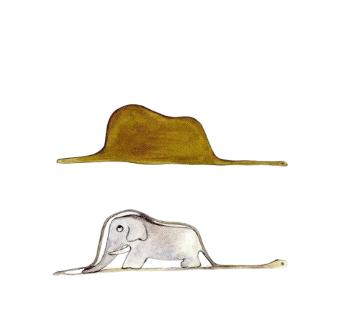
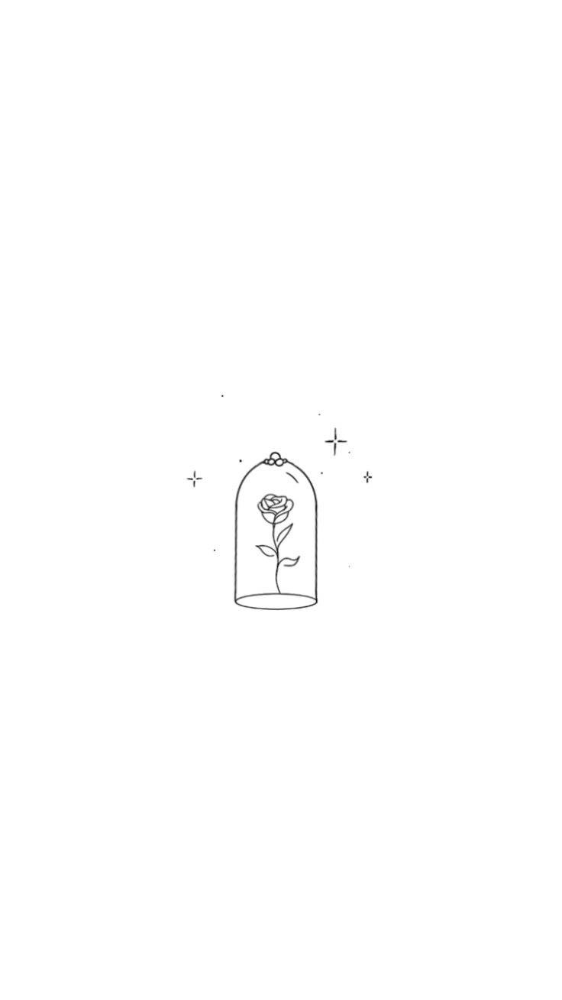
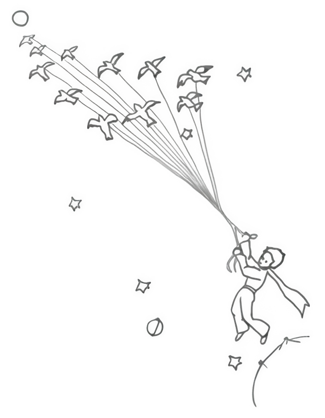
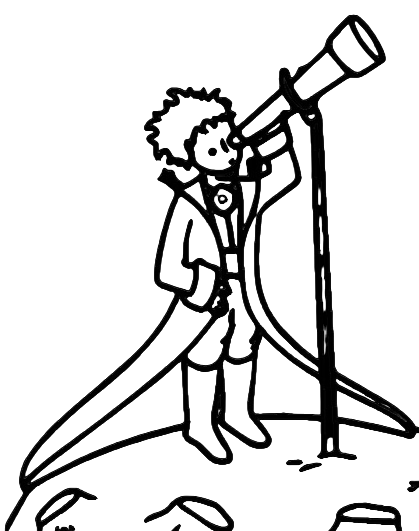
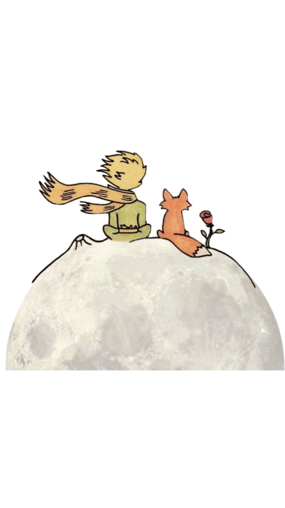

Дальше — шесть глав о том, как устроена работа со мной: без спешки и лишних объяснений. Чтение займёт пять минут.
Меня зовут Артём. Двенадцать лет я слушаю людей, которые пришли, когда стало трудно молчать. Закончил факультет психологии, прошёл долгосрочную программу по человекоцентрированной терапии, продолжаю личную терапию и супервизию.
До терапии я работал в другой сфере и помню, как выглядит выгорание изнутри. Поэтому со мной можно говорить о работе, деньгах и усталости так же серьёзно, как о детстве.

Поводом редко бывает одна большая причина. Чаще это накопившееся: не спится, всё раздражает, вроде всё в порядке — а радости нет.

Вы — эксперт по своей жизни. Моя работа — создать условия, в которых это снова слышно.
Ничего из сказанного вами не будет оценено. Здесь не нужно быть удобным клиентом.
Я остаюсь живым человеком в кабинете, а не нейтральной фигурой без реакций.
Мы не идём глубже, чем вы готовы сегодня. Пауза — тоже часть работы.
Короткий разговор без оплаты: вы рассказываете, что происходит, я — как могу быть полезен.
Три-четыре сессии, чтобы осмотреться и сформулировать, к чему идём.
Раз в неделю, в фиксированное время. Регулярность важнее интенсивности.
Терапию заканчивают, а не бросают: на это отводятся отдельные встречи.

Отмена без оплаты — не позднее чем за сутки. Для студентов и людей в трудной ситуации есть несколько мест по сниженной стоимости.

Напишите пару слов о том, что происходит. Я отвечаю в течение дня и предложу время для знакомства.
